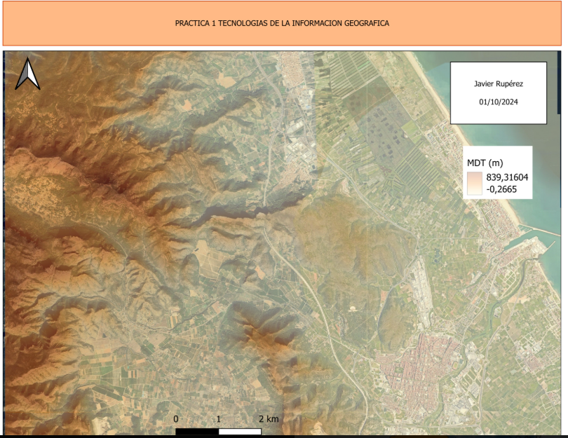

Práctica 1: Introducción
Captura de pantalla inicial del entorno de trabajo.
Imagen (PNG/JPG) Ver ImagenEste sitio web consolida los aprendizajes obtenidos en la asignatura, presentando evidencias profesionales de análisis espacial, teledetección y publicación de mapas web.
Selecciona una tarjeta para ver el detalle
Captura de pantalla inicial del entorno de trabajo.
Imagen (PNG/JPG) Ver Imagen
Tabla de waypoints y gráfico de elevación.
Gráfico y TablaAnálisis de ubicación de Contenedores y Accidentes.
WebMap Doble